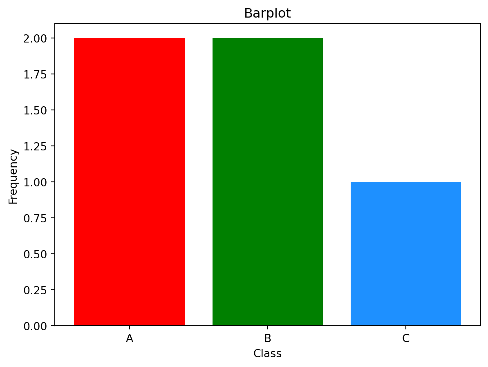
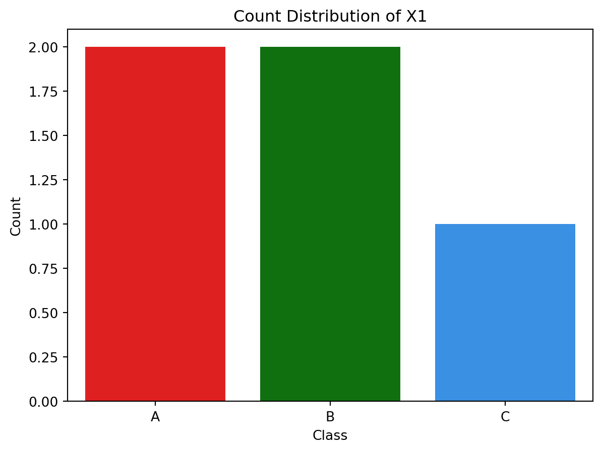
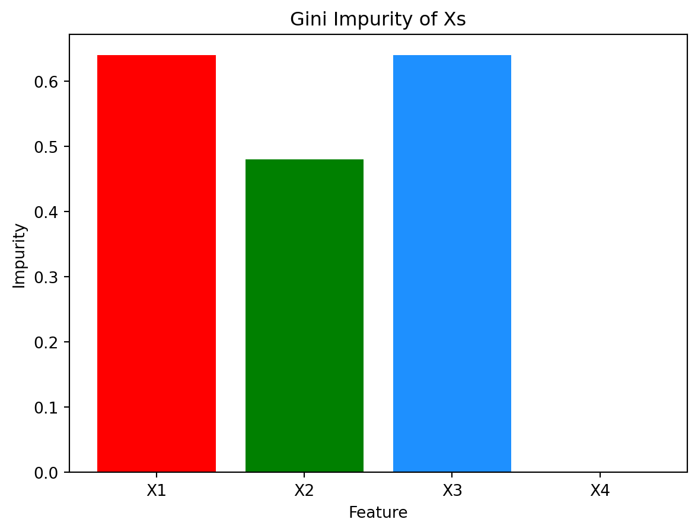
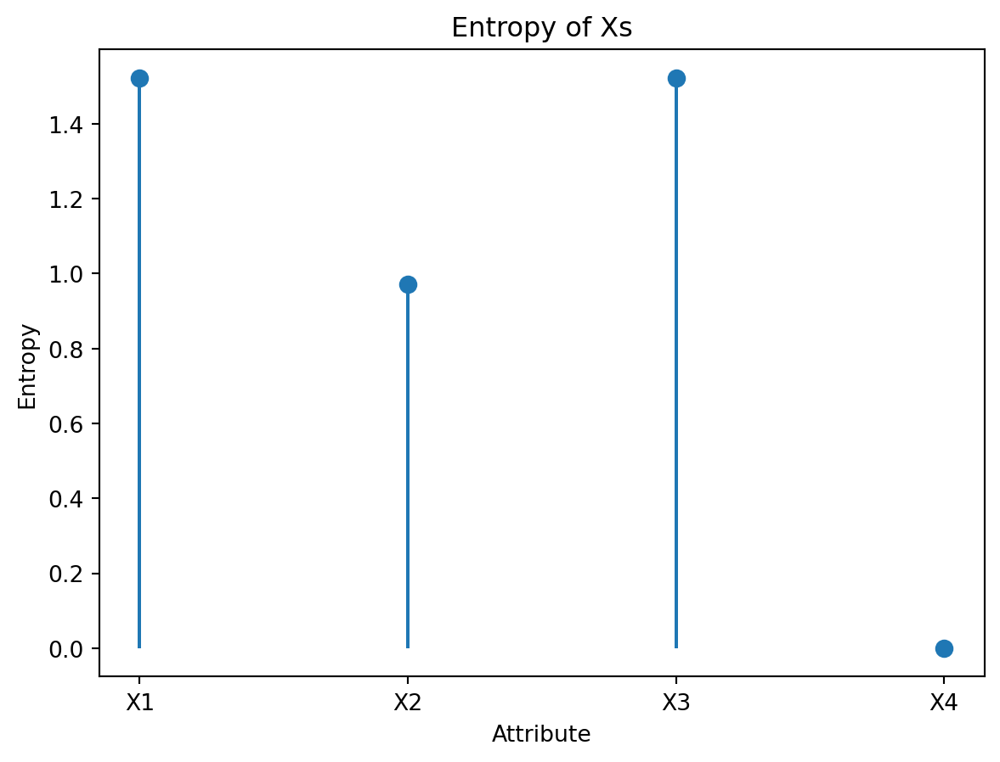

This session explores impurity measures used in various data mining methods, including decision trees.
C.1 What is Impurity?
Impurity describes how mixed or diverse a set of outcomes is. It measures the lack of uniformity in a distribution:
Pure distribution: all elements belong to the same category (no diversity).
Impure distribution: elements are spread across different categories (greater diversity).
NoteEveryday analogy
Imagine a jar of balls:
If the jar contains only red balls, it is pure (no uncertainty about what color you will draw).
If the jar has a mix of red, blue, and green balls, it is impure (uncertain which color you will draw).
The more evenly the balls are mixed, the higher the impurity.
C.1.1 Key idea
Impurity is about uncertainty or disorder in a distribution.
It shows how much “mixing” there is among the outcomes.
Different measures capture this idea in slightly different ways, but all describe how far the data is from being uniform or pure.
C.1.2 Mathematical measures of impurity
Several formulas are used to quantify this idea of diversity or uncertainty in a probability distribution:
Gini index (from probability theory)
Measures the probability of misclassifying a randomly chosen data point (i.e., how often a randomly chosen element would be incorrectly identified if labeled by chance)
Value is 0 for a pure node; Lower values mean more purity, higher values mean more mixture.
Entropy (from information theory)
Measures the amount of uncertainty or disorder in outcomes.
Entropy is 0 for a pure node; and larger when classes are more evenly mixed; Entropy is maximized when all outcomes are equally likely.
Variance (for numeric data)
Measures how spread out the values are.
Zero variance means all values are identical (pure), higher variance means greater diversity.
Classification Error (less common)
The fraction of samples that do not belong to the majority class in the node.
C.2 Data Preparation
For the following examples, let’s consider a dataset dat that consists of four input attributes, X1, X2X3, X4, for the prediction of values of the target attribute Y:
import numpy as npimport pandas as pd# Data Framedat = pd.DataFrame({"X1": pd.Categorical(['A','A','B','B','C'], categories=['A','B','C']),"X2": pd.Categorical(['A','A','B','B','A'], categories=['A','B','C']),"X3": pd.Categorical(['A','B','A','B','C'], categories=['A','B','C']),"X4": pd.Categorical(['A','A','A','A','A'], categories=['A','B','C']),"Y": pd.Series([True, True, False, False, False], dtype="boolean")})print(dat)
X1 X2 X3 X4 Y
0 A A A A True
1 A A B A True
2 B B A A False
3 B B B A False
4 C A C A False
Tip
pd.Categorical() is used to encode a vector, allowing you to specify possible values (categories) although some of the values don’t exist in the vector.
pd.Categorical([1,2], categories=[1,2,3])
[1, 2]
Categories (3, int64): [1, 2, 3]
Similarly, pd.Series(..., dtype="category") or pd.Categorical(...) without explicit categories uses only the values existing in the given input data object.
pd.Categorical([1,2])
[1, 2]
Categories (2, int64): [1, 2]
For the following examples, the X1 data can be organized, considering unique classes ClsX1, the frequencies FqX1, and probability distribution PrX11.
The frequency data FqX1 can be visualized in a bar chart by using Matplotlib’sbar() function, which takes data vectors with additional optional arguments:
# Barplotimport matplotlib.pyplot as pltfig, ax = plt.subplots()ax.bar( dat_X1["Class"], # bar names dat_X1["Freq"], # bar heights color=['red','green','dodgerblue'] # bar colors)# labels and titleax.set_title("Barplot")ax.set_xlabel("Class")ax.set_ylabel("Frequency")plt.show()

Also, bar charts can be created using the Seaborn package. The sns.barplot() function provides a high-level API for bar charts.
import seaborn as sns# Barplot with Seabornfig, ax = plt.subplots()sns.barplot( data=dat_X1, x="Class", y="Freq", hue="Class", palette=["red","green","dodgerblue"], ax=ax)ax.set_title("Count Distribution of X1")ax.set_xlabel("Class")ax.set_ylabel("Count")plt.show()

Here, the argument stat in geom_bar() is for statistical transformation before plotting the data, and this example takes the data as it is, without any tranfomation, by having the argument stat='identity'.
C.3 Gini Impurity
The Gini Impurity (also known as the Gini’s diversity index) measures the inequality among values of a frequency distribution from a set of data. It ranges between 0 and 1, where 0 indicates perfect homogeneity of the data (all values are the same as pure data).
Based on the formula \(Gini(X)=1-\sum_{k=1}^{C}{(P_{X}(k))^2}\), the Gini impurity can be calculated step-by-step:
# Step-by-step Gini calculationPrX1_sqr = PrX1**2# squared probability for each class kPrX1_sqr_sum = PrX1_sqr.sum() # sum of squared probabilitiesgini =1- PrX1_sqr_sum # Gini impuritygini
np.float64(0.6399999999999999)
The Gini impurity can also be calculated by wrapping the above into a custom function that takes a probability distribution vector:
# Example: frequencies for A, B, Cfreqs = np.array([FqX1.loc['A'], FqX1.loc['B'], FqX1.loc['C']])probs = freqs / freqs.sum()1- np.sum(probs**2)
np.float64(0.6399999999999999)
NoteGini Impurity for Numerical Data
The Gini impurity can be computed for numerical data in the way described above, given a split rule. In other words, the Gini impurity can be obtained in the same way, after transforming the numerical data by discretization (or binarization).
For example, let’s consider a split point for numeric data Xnum given as 5, and transform the data:
# Example numerical dataXnum = np.array([-2, -0.5, 1, 3, 7, 10])# Split transformation: whether greater than 5Xnum_greater_than_5 = Xnum >5print(Xnum_greater_than_5)
[False False False False True True]
Then, the Gini impurity is calculated in the same way as for categorical data:
# Frequency countsFqXnum = pd.Series(Xnum_greater_than_5).value_counts()# ProbabilitiesPrXnum = FqXnum / FqXnum.sum()# Use the previously defined Gini functiongini_imp(PrXnum)
0.4444444444444444
Alternatively, the same can be done directly from the split vector:
gini_from_labels(Xnum_greater_than_5)
np.float64(0.4444444444444444)
C.3.1 Exercise with Visualization - Bar Plot
Let’s calculate the Gini impurity of all X attributes and visualize them in a bar plot[^gal1]:
# Compute Gini impurity for each feature (X1–X4)GiniXs = {"X1": gini_from_labels(dat["X1"]),"X2": gini_from_labels(dat["X2"]),"X3": gini_from_labels(dat["X3"]),"X4": gini_from_labels(dat["X4"]),}# Organize the results in a DataFramedat_GiniXs = pd.DataFrame({"Feature": list(GiniXs.keys()),"Gini": list(GiniXs.values())})print(dat_GiniXs)
# Plot with Matplotlib (OO interface)fig, ax = plt.subplots()ax.bar( dat_GiniXs["Feature"], dat_GiniXs["Gini"], color=["red", "green", "dodgerblue", "orange"])# Labels and titleax.set_title("Gini Impurity of Xs")ax.set_xlabel("Feature")ax.set_ylabel("Impurity")plt.show()

C.4 Entropy
Entropy measures the amount of uncertainty in data of an attribute (a variable). It quantifies the average amount of information produced by a stochastic source of data. In other words, entropy is a measure of unpredictability or disorder within a set of possible outcomes. If all outcomes are equally likely, entropy is maximized. If one outcome is certain (probability 1), entropy is zero.
C.4.1 Computation
Based on the formula \(H(X)=-\sum_{k=1}^{C}{P_{X}(k)\log_{2}(P_{X}(k))}\), the Entropy for the probability distribution PrX1 of the previous example can be calculated step-by-step:
# Step-by-step Entropy calculationlog2_PrX1 = np.log2(PrX1) # log2(prob) for each kPrX1_log2_PrX1 = PrX1 * log2_PrX1 # prob * log2(prob)sum_PrX1_log2_PrX1 = PrX1_log2_PrX1.sum() # sum of productsentropyX1 =-sum_PrX1_log2_PrX1 # negative sumentropyX1
np.float64(1.5219280948873621)
Or, define a custom function that takes a probability distribution vector:
# Lollipop plot with Matplotlib (OO interface)fig, ax = plt.subplots()x_pos = np.arange(len(dat_entropyXs))y_val = dat_entropyXs["Entropy"].values# stems (segments from 0 to each entropy)ax.vlines(x=x_pos, ymin=0, ymax=y_val)# lollipop heads (points)ax.scatter(x_pos, y_val, s=50)# labels and ticksax.set_title("Entropy of Xs")ax.set_xlabel("Attribute")ax.set_ylabel("Entropy")ax.set_xticks(x_pos, dat_entropyXs["Feature"])plt.show()

C.5 Conditional Entropy
Conditional Entropy, \(H(X|Y)\), measures the amount of information needed to describe the outcome of a random variable \(X\) given that the value of another random variable \(Y\). It quantifies the remaining uncertainty in \(X\) after \(Y\) is known, as the entropy of \(X\) conditioned on \(Y\).
To calculate \(H(X|Y) = Pr(Y=F)\cdot H(X|Y=F) + Pr(Y=T)\cdot H(X|Y=T)\), two probabilities are needed:
the marginal probability of Y, \(Pr(Y=a)\).
the conditional probability of X given a value of Y, \(Pr(X|Y=a)\) to calculate \(H(X|Y=T)\).
C.5.1 Computation
C.5.1.1 Conditional probability \(Pr(X|Y=a)\)
The conditional probabilities, for example, of X1 given a value of Y can be obtained by first subsetting the data based on Y’s values and then dividing the frequency of X1 values by the total number of records in the subset. Two conditional probabilities can be calculated where Y can have two possible values, True and False:
The joint probability of X1 and Y can be obtained by using a cross-tabulation:
# Joint probability table of Y and X1PrYX1 = pd.crosstab(YX1["Y"], YX1["X1"], normalize=True)PrYX1
X1
A
B
C
Y
False
0.0
0.4
0.2
True
0.4
0.0
0.0
Then, the probabilities used in the example above can be calculated with the joint probabilities:
# Marginal probabilities of Y (row sums)PrY = PrYX1.sum(axis=1)# Conditional probabilities of X1 given YPrX1_givenYisF = PrYX1.loc[False] / PrY[False]PrX1_givenYisT = PrYX1.loc[True] / PrY[True]# Or more compactly: divide each row by its row sumPrX1_givenY = PrYX1.div(PrY, axis=0)# Conditional entropy H(X1|Y) using definitioncond_entropyX1_givenY = ( PrY[False] * entropy_H(PrX1_givenYisF.values) + PrY[True] * entropy_H(PrX1_givenYisT.values))cond_entropyX1_givenY
np.float64(0.5509775004326938)
Alternatively, it can be computed directly from the joint distribution: